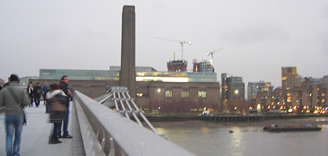

Tate Modern
https://www.tate.org.uk/visit/tate-modern
元は発電所だった建物を改造してできた、近現代美術館です。テムズ川を挟んで対岸にはセント・ポール大聖堂があり、間をミレニアム・ブリッジが結んでいて、有名な観光スポットになっています。館内の壁には膨大な数のアーティストの名前が描かれています。



元は発電所だった建物を改造してできた、近現代美術館です。テムズ川を挟んで対岸にはセント・ポール大聖堂があり、間をミレニアム・ブリッジが結んでいて、有名な観光スポットになっています。館内の壁には膨大な数のアーティストの名前が描かれています。